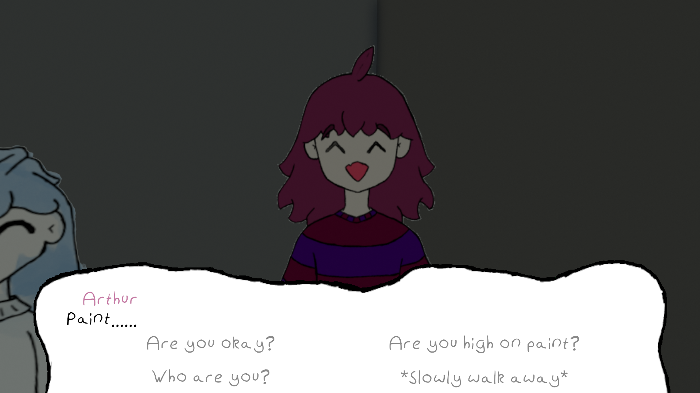

Developers:
- Concept: HeckingGoose
- Code/Scripting: HeckingGoose
- 2D Artwork: HeckingGoose
- 3D Modelling: HeckingGoose
What is Limbo Lane?
Limbo Lane is a game about gambling with the deceased, or more specifically: deceased people who have minor gambling addictions.
The game demo was developed as my college NEA project, and was originally intended to feature a proper storyline for the player to follow. However, due to time restrictions, the demo only contains the first 10 minutes (ish) of gameplay, with the majority of the development time having been spent on making my own custom systems for the game.
The game was set to take place in a world where there is a space between living and being dead that people go to temporarily as a sort of comfy purgatory, with this space being split into districts/areas that were each home to different groups of people. Limbo Lane was the name of one of these areas, and the people inhabiting Limbo Lane were gamblers. The player's journey would have taken them to Limbo Lane where they would have discovered that there was a minor issue with overpopulation that if they solved would allow them to head back into their regular life.
The main gameplay of Limbo Lane was to be centred around a game called 'Phisch & chips', since the population of Limbo Lane are supposed to be gamblers. The mechanics of Phisch & chips are inspired from card games such as Inscryption and Adventure Time: Card Wars.
What is Oyster?

- An image of Oyster V2.
- An image of Oyster V3 (3.0.0).
Oyster is the name that I have given my series of speech/cutscene scripting systems that originally started off in a test project as a feature that I wanted to have a go at making. When development of Limbo Lane started, Oyster was in what I have nicknamed 'Version 2', with version 1 being simply basic text boxes that the user could click through in game and modify as an array in the Unity editor. Version 2 of Oyster introduced improvements such as being able to load scripts from text files and implementing functional decisions into conversations through using assembly-like branching by having certain commands jump to specific line numbers based on the result of user input.
- An image of an Oyster V3 (3.0.0) script.